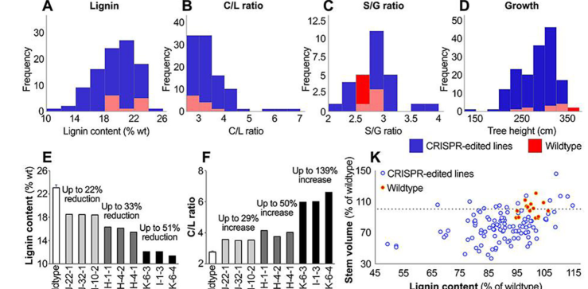

Caffeoyl-CoA O-methyltransferase that methylates caffeoyl-CoA and 5-hydroxyferuloyl-CoA in phenylpropanoid/lignin metabolism.
Definition: The chemical reactions and pathways resulting in the formation of polysaccharides modified with feruloyl groups in the plant cell wall.
Justification: The reviewed UniProt entry states that Populus CCoAOMT plays a role in synthesis of feruloylated polysaccharides, but existing GO lignin and broad phenylpropanoid terms do not capture this wall-polysaccharide feruloylation role.
Parent term: phenylpropanoid biosynthetic process
Supporting Evidence:
| GO Term | Evidence | Action | Reason |
|---|---|---|---|
|
GO:0008171
O-methyltransferase activity
|
IEA
GO_REF:0000002 |
MODIFY |
Summary: O-methyltransferase activity is correct but too broad for a characterized caffeoyl-CoA O-methyltransferase.
Reason: Use the specific EC/Rhea-supported caffeoyl-CoA O-methyltransferase term. UniProt names the protein with the specific EC 2.1.1.104, and the falcon deep research confirms it is a SAM-dependent O-methyltransferase acting on hydroxycinnamoyl-CoA esters, so the generic O-methyltransferase term should be replaced with the specific activity.
Proposed replacements:
caffeoyl-CoA O-methyltransferase activity
Supporting Evidence:
file:POPTR/CCOAOMT1/CCOAOMT1-uniprot.txt
RecName: Full=Caffeoyl-CoA O-methyltransferase 1;
file:POPTR/CCOAOMT1/CCOAOMT1-uniprot.txt
EC=2.1.1.104;
file:POPTR/CCOAOMT1/CCOAOMT1-deep-research-falcon.md
catalyzing methylation of
|
|
GO:0042409
caffeoyl-CoA O-methyltransferase activity
|
IEA
GO_REF:0000120 |
ACCEPT |
Summary: Caffeoyl-CoA O-methyltransferase activity is the core molecular function.
Reason: The UniProt entry and EC assignment match this term directly, and the falcon deep research independently confirms this as the best molecular-function annotation for O65862, describing it as a SAM-dependent hydroxycinnamoyl-CoA O-methyltransferase that methylates caffeoyl-CoA. The original IEA is mapped from RHEA:16925/EC:2.1.1.104, consistent with the curated catalytic-activity statement.
Supporting Evidence:
file:POPTR/CCOAOMT1/CCOAOMT1-uniprot.txt
Reaction=(E)-caffeoyl-CoA + S-adenosyl-L-methionine = (E)-feruloyl-CoA
file:POPTR/CCOAOMT1/CCOAOMT1-uniprot.txt
EC=2.1.1.104;
file:POPTR/CCOAOMT1/CCOAOMT1-deep-research-falcon.md
CCoAOMT is described as methylating
file:POPTR/CCOAOMT1/CCOAOMT1-deep-research-falcon.md
placing it in the phenylpropanoid/monolignol pathway where methylation is required for monolignol formation and lignification.
|
|
GO:0009699
phenylpropanoid biosynthetic process
|
IEA
GO_REF:0000041 |
MODIFY |
Summary: Phenylpropanoid biosynthesis is correct but less specific than the experimentally supported lignin-biosynthesis role of Populus CCoAOMT.
Reason: The Populus xylem down-regulation study directly links CCoAOMT to lignin amount, and the falcon deep research reinforces that the strongest Populus evidence places CCoAOMT activity in xylem lignification/secondary-wall formation rather than only the broad phenylpropanoid pathway. Reducing CCoAOMT lowers Klason lignin and shifts S/G ratio in poplar wood, so the more specific lignin-biosynthesis term better captures the experimentally supported role.
Proposed replacements:
lignin biosynthetic process
Supporting Evidence:
PMID:10934215
To clarify the in vivo role of CCoAOMT in lignin biosynthesis, transgenic poplars with 10% residual CCoAOMT protein levels in the stem xylem were generated.
PMID:10934215
the affected transgenic lines had a 12% reduced Klason lignin content
file:POPTR/CCOAOMT1/CCOAOMT1-uniprot.txt
DR GO; GO:0009809; P:lignin biosynthetic process; IEA:UniProtKB-KW.
file:POPTR/CCOAOMT1/CCOAOMT1-deep-research-falcon.md
it is direct experimental evidence in Populus wood that reducing CCoAOMT activity changes lignin amount and composition in xylem,
file:POPTR/CCOAOMT1/CCOAOMT1-deep-research-falcon.md
supporting the functional assignment of Populus CCOAOMT enzymes (including PtrCCOAOMT1) as lignin-pathway O-methyltransferases.
|
Q: How much does CCOAOMT1 contribute to lignin composition relative to CCOAOMT2 in xylem?
Q: What fraction of CCOAOMT1 activity supports monolignol biosynthesis versus feruloylated polysaccharide synthesis in Populus xylem?
Experiment: Create isoform-specific knockdowns and measure lignin monomer composition and wall-bound ferulate.
Type: targeted functional assay
The research report should be a detailed narrative explaining the function, biological processes, and localization of the gene product. Citations should be given for all claims.
You should prioritize authoritative reviews and primary scientific literature when conducting research. You can supplement
this with annotations you find in gene/protein databases, but these can be outdated or inaccurate.
We are specifically interested in the primary function of the gene - for enzymes, what reaction is catalyzed, and what is the substrate specificity? For transporters, what is the substrate? For structural proteins or adapters, what is the broader structural role? For signaling molecules, what is the role in the pathway.
We are interested in where in or outside the cell the gene product carries out its function.
We are also interested in the signaling or biochemical pathways in which the gene functions. We are less interested in broad pleiotropic effects, except where these elucidate the precise role.
Include evidence where possible. We are interested in both experimental evidence as well as inference from structure, evolution, or bioinformatic analysis. Precise studies should be prioritized over high-throughput, where available.
Target identity. The requested target is UniProt O65862 from Populus trichocarpa (western balsam poplar), annotated as caffeoyl‑CoA O‑methyltransferase 1 (CCoAOMT‑1 / CCoAOMT1; EC 2.1.1.104), a SAM-dependent O‑methyltransferase in the class I-like SAM-binding methyltransferase superfamily (caffeoyl‑CoA 3‑O‑methyltransferase). This identity is consistent with Populus lignin-pathway literature where “CCoAOMT” denotes caffeoyl‑CoA O‑methyltransferase acting in monolignol biosynthesis. (meyermans2000modificationsinlignin pages 3-4, sulis2023multiplexcrisprediting pages 3-4)
Important limitation. In this tool run, no accessible full-text paper provided a PtrCCOAOMT1-only biochemical kinetic dataset or direct subcellular localization assay (e.g., fluorescence-tagging) for the specific UniProt O65862 protein. Therefore, localization is described by inference consistent with its pathway position and by Populus-genus functional genetics; Populus evidence here is strongest at the family/enzyme activity level and for closely related Populus materials. (meyermans2000modificationsinlignin pages 3-4, sulis2023multiplexcrisprediting pages 3-4)
Lignin is a major secondary cell-wall polymer derived from monolignols, and its composition is often summarized as H/G/S (p-hydroxyphenyl/guaiacyl/syringyl) units. O-methylation reactions are key steps that determine whether downstream metabolites become G- and S-type lignin precursors. (yoshida2024syntheticbiologyapproachfor pages 2-4)
CCOAOMT1 encodes a SAM-dependent O‑methyltransferase that transfers a methyl group from S-adenosyl‑L‑methionine (SAM) to a phenolic hydroxyl of hydroxycinnamoyl‑CoA esters.
In Populus-focused primary literature, CCoAOMT is described as methylating caffeoyl‑CoA (and, in vitro, also 5‑hydroxyferuloyl‑CoA), placing it in the phenylpropanoid/monolignol pathway where methylation is required for monolignol formation and lignification. (meyermans2000modificationsinlignin pages 1-2)
A 2024 synthetic-biology review summarizes a widely used conceptual model: CCoAOMT performs the first O‑methylation step contributing to G-unit precursor formation, whereas COMT carries out a later methylation step contributing to S-unit formation. (yoshida2024syntheticbiologyapproachfor pages 2-4)
Because CCoAOMT is SAM-dependent, cellular methyl-donor balance can control its effective flux. The product S-adenosylhomocysteine (SAH) is highlighted as a potent inhibitor of SAM-dependent O-methyltransferases, and the SAM:SAH ratio (not only SAM abundance) is emphasized as a determinant of catalytic efficiency for lignin O-methylation steps (CCoAOMT/COMT). (yoshida2024syntheticbiologyapproachfor pages 4-5)
A landmark Populus wood study down-regulated CCoAOMT (≈90% reduction; ~10% residual protein) in transgenic hybrid poplar (P. tremula × P. alba) xylem and quantified lignin and metabolite consequences. (meyermans2000modificationsinlignin pages 1-2)
Key findings:
- Klason lignin decreased by ~12% in CCoAOMT-downregulated xylem. (meyermans2000modificationsinlignin pages 1-2)
- S/G ratio increased by ~11% in the noncondensed lignin fraction, indicating that reducing this O-methylation step can shift lignin composition. (meyermans2000modificationsinlignin pages 1-2)
- Lignin chemistry changed (e.g., increased lignin-attached p-hydroxybenzoate). (meyermans2000modificationsinlignin pages 1-2)
- Substantial diversion into soluble phenolics occurred, including accumulation of O4-β-D-glucopyranosyl-sinapic acid reaching ~10% of soluble phenolics, consistent with altered flux through phenylpropanoid metabolism under reduced CCoAOMT activity. (meyermans2000modificationsinlignin pages 1-2, meyermans2000modificationsinlignin pages 2-3)
Interpretation for PtrCCOAOMT1 (O65862). Although the transgenic study is not in P. trichocarpa, it is direct experimental evidence in Populus wood that reducing CCoAOMT activity changes lignin amount and composition in xylem, supporting the functional assignment of Populus CCOAOMT enzymes (including PtrCCOAOMT1) as lignin-pathway O-methyltransferases. (meyermans2000modificationsinlignin pages 3-4)
The Populus antisense study explicitly notes in vitro methylation of caffeoyl‑CoA and 5‑hydroxyferuloyl‑CoA by CCoAOMT, supporting hydroxycinnamoyl‑CoA esters as physiological substrates and consistent with the enzyme name “caffeoyl‑CoA O‑methyltransferase.” (meyermans2000modificationsinlignin pages 1-2)
No PtrCCOAOMT1-specific kinetic constants (Km/kcat) were accessible in the retrieved full texts, so substrate preference cannot be quantitatively ranked for O65862 in this run.
The accessible Populus functional genetics evidence is derived from xylem/wood tissues (site of lignification), but it does not directly localize the enzyme within the cell (e.g., cytosol vs organelles). (meyermans2000modificationsinlignin pages 1-2)
Given that its substrates are CoA esters and that the relevant pathway steps occur prior to polymerization into the apoplast/cell wall, the most consistent inference is that PtrCCOAOMT1 operates in the intracellular phenylpropanoid/monolignol biosynthetic metabolism associated with lignifying xylem cells, but a direct localization assay remains to be cited from the retrieved sources. (meyermans2000modificationsinlignin pages 1-2)
A major 2023 Science study demonstrated multiplex CRISPR editing of 21 lignin biosynthesis genes in Populus trichocarpa to engineer wood composition for fiber production, with CCoAOMT among the repeatedly selected targets in optimal multigene strategies. (sulis2023multiplexcrisprediting pages 3-4)
Quantitative outcomes reported for edited P. trichocarpa lines include:
- Lignin reductions reaching approximately ~51.7% of wild type in selected edited lines. (sulis2023multiplexcrisprediting pages 3-4, sulis2023multiplexcrisprediting media 29aa95a8)
- Carbohydrate:lignin (C/L) ratio increases up to ~239% of wild type. (sulis2023multiplexcrisprediting pages 3-4)
- S/G ratio increases from ~2.7 (WT) to as high as 4.0 in edited lines. (sulis2023multiplexcrisprediting pages 3-4, sulis2023multiplexcrisprediting media 29aa95a8)
This work is not a single-gene functional characterization of CCOAOMT1, but it provides strong, modern Populus trichocarpa evidence that targeting lignin-pathway genes including CCoAOMT family members can yield large wood-composition shifts relevant to industrial processing. (sulis2023multiplexcrisprediting pages 3-4)
A 2024 review on synthetic-biology approaches to lignocellulose engineering emphasizes that lignin O‑methylation depends on SAM/SAH metabolism, and that manipulating these methyl-donor pathways can substantially alter lignin content and composition and improve downstream sugar yield (examples summarized across systems). (yoshida2024syntheticbiologyapproachfor pages 4-5, yoshida2024syntheticbiologyapproachfor pages 2-4)
Although the review’s quantitative examples are not Populus-specific, its mechanistic framing is directly relevant to the enzymology of PtrCCOAOMT1 (a SAM-dependent O-methyltransferase) and helps interpret how methylation capacity can constrain lignin biosynthesis. (yoshida2024syntheticbiologyapproachfor pages 4-5)
The 2023 Science multiplex editing study frames its objective as improving wood for more-efficient fiber pulping and sustainable fiber production by redesigning lignin composition while monitoring growth. The reported increases in C/L ratio and reductions in lignin provide a compositional basis for lower-recalcitrance feedstocks. (sulis2023multiplexcrisprediting pages 3-4, sulis2023multiplexcrisprediting media 29aa95a8)
A Populus bioenergy implementation is demonstrated by expressing an engineered monolignol 4‑O‑methyltransferase (distinct from CCoAOMT, but still an O‑methylation intervention in the monolignol space) in hybrid aspen. This approach substantially increased biomass conversion metrics:
- 62% increase in simple sugar release during enzymatic digestion, and
- up to 49% increase in ethanol yield under enzymatic digestion and fermentation. (cai2016enhancingdigestibilityand pages 1-2)
This underscores the practical importance of phenolic O‑methylation chemistry (including the endogenous CCoAOMT step) to real-world Populus biorefinery traits. (cai2016enhancingdigestibilityand pages 1-2)
The Populus antisense CCoAOMT study explicitly motivates lignin modification for the pulp/paper industry, noting lignin as a negative factor in paper production due to the need for energy-intensive extraction; it then demonstrates that CCoAOMT reduction measurably lowers lignin content in xylem. (meyermans2000modificationsinlignin pages 1-2)
Primary molecular function. PtrCCOAOMT1 (UniProt O65862) is best annotated as a SAM-dependent hydroxycinnamoyl‑CoA O‑methyltransferase catalyzing methylation of caffeoyl‑CoA (and at least some related hydroxycinnamoyl‑CoA esters in vitro) as part of the monolignol (lignin precursor) biosynthetic pathway, contributing to flux toward G-type lignin precursors. (meyermans2000modificationsinlignin pages 1-2, yoshida2024syntheticbiologyapproachfor pages 2-4)
Biological process. The strongest Populus evidence places CCoAOMT activity as functionally important in xylem lignification/secondary wall formation: perturbation changes lignin amount and composition in Populus wood, and Populus trichocarpa engineering strategies frequently include CCoAOMT genes among the controllable nodes to redesign wood composition. (meyermans2000modificationsinlignin pages 1-2, sulis2023multiplexcrisprediting pages 3-4)
Cellular location (best-supported statement from accessible evidence). Available evidence supports that the relevant activity occurs in lignifying xylem tissues but does not directly resolve subcellular localization for PtrCCOAOMT1. (meyermans2000modificationsinlignin pages 1-2)
Systems/engineering context (2023–2024). Modern Populus engineering indicates that single-gene perturbations are often insufficient to achieve large compositional redesign without trade-offs; instead, multigene editing strategies (including CCoAOMT targets) can achieve large shifts in lignin content and S/G while aiming to maintain growth, enabling practical routes to more processable woody biomass. (sulis2023multiplexcrisprediting pages 3-4, sulis2023multiplexcrisprediting media 29aa95a8)
| Study (authors, year) | Organism/material | Intervention/approach | What it shows about CCoAOMT reaction/pathway role/substrate specificity/localization | Key quantitative results (lignin %, S/G, saccharification etc.) | URL/DOI |
|---|---|---|---|---|---|
| Meyermans et al., 2000 | Transgenic poplar (Populus tremula × P. alba) xylem | Antisense down-regulation of CCoAOMT in wood-forming tissues | Direct Populus evidence that CCoAOMT functions in monolignol/lignin biosynthesis; described as methylating caffeoyl-CoA and 5-hydroxyferuloyl-CoA in vitro, supporting conversion toward feruloyl-derived G-lignin precursors; perturbation shifts soluble phenolics and lignin composition in xylem, consistent with a cytosolic phenylpropanoid enzyme acting before polymerization into the cell wall (meyermans2000modificationsinlignin pages 1-2, meyermans2000modificationsinlignin pages 2-3, meyermans2000modificationsinlignin pages 3-4) | ~90% reduction of CCoAOMT protein; 12% lower Klason lignin; 11% higher S/G ratio in noncondensed lignin; increased lignin-bound p-hydroxybenzoate; O4-β-D-glucopyranosyl-sinapic acid reached ~10% of soluble phenolics (meyermans2000modificationsinlignin pages 1-2, meyermans2000modificationsinlignin pages 2-3, meyermans2000modificationsinlignin pages 3-4) | https://doi.org/10.1074/jbc.M006915200 |
| Sulis et al., 2023 | Populus trichocarpa edited trees | Multiplex CRISPR across 21 lignin-pathway genes, including CCoAOMT family members | CCoAOMT is a recurrent target in successful multigene engineering strategies for lowering lignin and improving fiber traits; supports its central pathway role in lignin O-methylation and wood-property design, though this study is pathway-engineering rather than single-gene biochemical characterization of CCOAOMT1 (sulis2023multiplexcrisprediting pages 3-4) | 69,123 edit combinations evaluated; only 347 (0.5%) met stringent design criteria; multigene edits predicted lignin as low as 50.7% of WT; edited poplars reached ~51.7% of WT lignin, carbohydrate:lignin up to 239% of WT, S/G up to 4.0; PtrCCoAOMT2 biallelic edit frequency 7% in multiplex setting (sulis2023multiplexcrisprediting pages 3-4) | https://doi.org/10.1126/science.add4514 |
| Yoshida et al., 2024 | Review of lignocellulose engineering in plants, including tree applications | Synthetic-biology review of lignin engineering strategies | Summarizes current consensus: CCoAOMT catalyzes the first O-methylation step yielding G-type lignin precursors, whereas COMT catalyzes the later methylation step toward S-lignin; emphasizes dependence on SAM/SAH methyl-donor balance, which functionally constrains CCoAOMT activity and is exploitable for engineering biomass processability (yoshida2024syntheticbiologyapproachfor pages 4-5, yoshida2024syntheticbiologyapproachfor pages 2-4) | Reported from cited transgenic systems: lignin decreased 27–31%; glucuronoxylan methylation reduced 72%; glucose content increased 9–13%; sugar yield increased 26–29%; some methylation-perturbed lines showed ~57.8% higher saccharification and 687.7% more C-lignin than WT (not Populus-specific) (yoshida2024syntheticbiologyapproachfor pages 4-5, yoshida2024syntheticbiologyapproachfor pages 2-4) | https://doi.org/10.5511/plantbiotechnology.24.0630a |
Table: This table compiles the most relevant evidence connecting Populus CCoAOMT/CCOAOMT1 to lignin biosynthesis and biomass engineering. It highlights direct Populus functional data, recent CRISPR implementation in poplar, and current expert synthesis of the enzyme’s pathway role.
A key quantitative panel from Sulis et al. (2023) illustrating shifts in lignin content, C/L ratio, and S/G ratio in multiplex-edited P. trichocarpa is provided here. (sulis2023multiplexcrisprediting media 29aa95a8)
References
(meyermans2000modificationsinlignin pages 3-4): Hugo Meyermans, Kris Morreel, Catherine Lapierre, Brigitte Pollet, André De Bruyn, Roger Busson, Piet Herdewijn, Bart Devreese, Jozef Van Beeumen, Jane M. Marita, John Ralph, Cuiying Chen, Bart Burggraeve, Marc Van Montagu, Eric Messens, and Wout Boerjan. Modifications in lignin and accumulation of phenolic glucosides in poplar xylem upon down-regulation of caffeoyl-coenzyme a o-methyltransferase, an enzyme involved in lignin biosynthesis*. The Journal of Biological Chemistry, 275:36899-36909, Nov 2000. URL: https://doi.org/10.1074/jbc.m006915200, doi:10.1074/jbc.m006915200. This article has 384 citations.
(sulis2023multiplexcrisprediting pages 3-4): Daniel B. Sulis, Xiao Jiang, Chenmin Yang, Barbara M. Marques, Megan L. Matthews, Zachary Miller, Kai Lan, Carlos Cofre-Vega, Baoguang Liu, Runkun Sun, Henry Sederoff, Ryan G. Bing, Xiaoyan Sun, Cranos M. Williams, Hasan Jameel, Richard Phillips, Hou-min Chang, Ilona Peszlen, Yung-Yun Huang, Wei Li, Robert M. Kelly, Ronald R. Sederoff, Vincent L. Chiang, Rodolphe Barrangou, and Jack P. Wang. Multiplex crispr editing of wood for sustainable fiber production. Science, 381:216-221, Jul 2023. URL: https://doi.org/10.1126/science.add4514, doi:10.1126/science.add4514. This article has 121 citations and is from a highest quality peer-reviewed journal.
(yoshida2024syntheticbiologyapproachfor pages 2-4): Kouki Yoshida, Shingo Sakamoto, and Nobutaka Mitsuda. Synthetic-biology approach for plant lignocellulose engineering. Plant Biotechnology, 41:213-230, Sep 2024. URL: https://doi.org/10.5511/plantbiotechnology.24.0630a, doi:10.5511/plantbiotechnology.24.0630a. This article has 7 citations and is from a peer-reviewed journal.
(meyermans2000modificationsinlignin pages 1-2): Hugo Meyermans, Kris Morreel, Catherine Lapierre, Brigitte Pollet, André De Bruyn, Roger Busson, Piet Herdewijn, Bart Devreese, Jozef Van Beeumen, Jane M. Marita, John Ralph, Cuiying Chen, Bart Burggraeve, Marc Van Montagu, Eric Messens, and Wout Boerjan. Modifications in lignin and accumulation of phenolic glucosides in poplar xylem upon down-regulation of caffeoyl-coenzyme a o-methyltransferase, an enzyme involved in lignin biosynthesis*. The Journal of Biological Chemistry, 275:36899-36909, Nov 2000. URL: https://doi.org/10.1074/jbc.m006915200, doi:10.1074/jbc.m006915200. This article has 384 citations.
(yoshida2024syntheticbiologyapproachfor pages 4-5): Kouki Yoshida, Shingo Sakamoto, and Nobutaka Mitsuda. Synthetic-biology approach for plant lignocellulose engineering. Plant Biotechnology, 41:213-230, Sep 2024. URL: https://doi.org/10.5511/plantbiotechnology.24.0630a, doi:10.5511/plantbiotechnology.24.0630a. This article has 7 citations and is from a peer-reviewed journal.
(meyermans2000modificationsinlignin pages 2-3): Hugo Meyermans, Kris Morreel, Catherine Lapierre, Brigitte Pollet, André De Bruyn, Roger Busson, Piet Herdewijn, Bart Devreese, Jozef Van Beeumen, Jane M. Marita, John Ralph, Cuiying Chen, Bart Burggraeve, Marc Van Montagu, Eric Messens, and Wout Boerjan. Modifications in lignin and accumulation of phenolic glucosides in poplar xylem upon down-regulation of caffeoyl-coenzyme a o-methyltransferase, an enzyme involved in lignin biosynthesis*. The Journal of Biological Chemistry, 275:36899-36909, Nov 2000. URL: https://doi.org/10.1074/jbc.m006915200, doi:10.1074/jbc.m006915200. This article has 384 citations.
(sulis2023multiplexcrisprediting media 29aa95a8): Daniel B. Sulis, Xiao Jiang, Chenmin Yang, Barbara M. Marques, Megan L. Matthews, Zachary Miller, Kai Lan, Carlos Cofre-Vega, Baoguang Liu, Runkun Sun, Henry Sederoff, Ryan G. Bing, Xiaoyan Sun, Cranos M. Williams, Hasan Jameel, Richard Phillips, Hou-min Chang, Ilona Peszlen, Yung-Yun Huang, Wei Li, Robert M. Kelly, Ronald R. Sederoff, Vincent L. Chiang, Rodolphe Barrangou, and Jack P. Wang. Multiplex crispr editing of wood for sustainable fiber production. Science, 381:216-221, Jul 2023. URL: https://doi.org/10.1126/science.add4514, doi:10.1126/science.add4514. This article has 121 citations and is from a highest quality peer-reviewed journal.
(cai2016enhancingdigestibilityand pages 1-2): Yuanheng Cai, Kewei Zhang, Hoon Kim, Guichuan Hou, Xuebin Zhang, Huijun Yang, Huan Feng, Lisa Miller, John Ralph, and Chang-Jun Liu. Enhancing digestibility and ethanol yield of populus wood via expression of an engineered monolignol 4-o-methyltransferase. Nature Communications, Jun 2016. URL: https://doi.org/10.1038/ncomms11989, doi:10.1038/ncomms11989. This article has 89 citations and is from a highest quality peer-reviewed journal.

CCOAOMT1-uniprot.txt and CCOAOMT1-goa.tsv.id: O65862
gene_symbol: CCOAOMT1
product_type: PROTEIN
status: DRAFT
taxon:
id: NCBITaxon:3694
label: Populus trichocarpa
description: Caffeoyl-CoA O-methyltransferase that methylates caffeoyl-CoA and 5-hydroxyferuloyl-CoA in phenylpropanoid/lignin
metabolism.
existing_annotations:
- term:
id: GO:0008171
label: O-methyltransferase activity
evidence_type: IEA
original_reference_id: GO_REF:0000002
review:
summary: O-methyltransferase activity is correct but too broad for a characterized caffeoyl-CoA O-methyltransferase.
action: MODIFY
reason: Use the specific EC/Rhea-supported caffeoyl-CoA O-methyltransferase term.
UniProt names the protein with the specific EC 2.1.1.104, and the falcon deep
research confirms it is a SAM-dependent O-methyltransferase acting on hydroxycinnamoyl-CoA
esters, so the generic O-methyltransferase term should be replaced with the
specific activity.
supported_by:
- reference_id: file:POPTR/CCOAOMT1/CCOAOMT1-uniprot.txt
supporting_text: 'RecName: Full=Caffeoyl-CoA O-methyltransferase 1;'
- reference_id: file:POPTR/CCOAOMT1/CCOAOMT1-uniprot.txt
supporting_text: EC=2.1.1.104;
- reference_id: file:POPTR/CCOAOMT1/CCOAOMT1-deep-research-falcon.md
supporting_text: catalyzing methylation of
proposed_replacement_terms:
- id: GO:0042409
label: caffeoyl-CoA O-methyltransferase activity
- term:
id: GO:0042409
label: caffeoyl-CoA O-methyltransferase activity
evidence_type: IEA
original_reference_id: GO_REF:0000120
review:
summary: Caffeoyl-CoA O-methyltransferase activity is the core molecular function.
action: ACCEPT
reason: The UniProt entry and EC assignment match this term directly, and the falcon
deep research independently confirms this as the best molecular-function annotation
for O65862, describing it as a SAM-dependent hydroxycinnamoyl-CoA O-methyltransferase
that methylates caffeoyl-CoA. The original IEA is mapped from RHEA:16925/EC:2.1.1.104,
consistent with the curated catalytic-activity statement.
supported_by:
- reference_id: file:POPTR/CCOAOMT1/CCOAOMT1-uniprot.txt
supporting_text: Reaction=(E)-caffeoyl-CoA + S-adenosyl-L-methionine = (E)-feruloyl-CoA
- reference_id: file:POPTR/CCOAOMT1/CCOAOMT1-uniprot.txt
supporting_text: EC=2.1.1.104;
- reference_id: file:POPTR/CCOAOMT1/CCOAOMT1-deep-research-falcon.md
supporting_text: CCoAOMT is described as methylating
- reference_id: file:POPTR/CCOAOMT1/CCOAOMT1-deep-research-falcon.md
supporting_text: placing it in the phenylpropanoid/monolignol pathway where methylation
is required for monolignol formation and lignification.
- term:
id: GO:0009699
label: phenylpropanoid biosynthetic process
evidence_type: IEA
original_reference_id: GO_REF:0000041
review:
summary: Phenylpropanoid biosynthesis is correct but less specific than the experimentally supported lignin-biosynthesis
role of Populus CCoAOMT.
action: MODIFY
reason: The Populus xylem down-regulation study directly links CCoAOMT to lignin amount, and the falcon
deep research reinforces that the strongest Populus evidence places CCoAOMT activity in xylem
lignification/secondary-wall formation rather than only the broad phenylpropanoid pathway. Reducing
CCoAOMT lowers Klason lignin and shifts S/G ratio in poplar wood, so the more specific lignin-biosynthesis
term better captures the experimentally supported role.
supported_by:
- reference_id: PMID:10934215
supporting_text: To clarify the in vivo role of CCoAOMT in lignin biosynthesis, transgenic poplars with 10%
residual CCoAOMT protein levels in the stem xylem were generated.
reference_section_type: ABSTRACT
- reference_id: PMID:10934215
supporting_text: the affected transgenic lines had a 12% reduced Klason lignin content
reference_section_type: ABSTRACT
- reference_id: file:POPTR/CCOAOMT1/CCOAOMT1-uniprot.txt
supporting_text: DR GO; GO:0009809; P:lignin biosynthetic process; IEA:UniProtKB-KW.
- reference_id: file:POPTR/CCOAOMT1/CCOAOMT1-deep-research-falcon.md
supporting_text: it is direct experimental evidence in Populus wood that reducing CCoAOMT activity changes
lignin amount and composition in xylem,
- reference_id: file:POPTR/CCOAOMT1/CCOAOMT1-deep-research-falcon.md
supporting_text: supporting the functional assignment of Populus CCOAOMT enzymes (including PtrCCOAOMT1)
as lignin-pathway O-methyltransferases.
proposed_replacement_terms:
- id: GO:0009809
label: lignin biosynthetic process
references:
- id: GO_REF:0000002
title: Gene Ontology annotation through association of InterPro records with GO terms
findings:
- statement: GO_REF:0000002 supplied one or more source GOA annotations reviewed in this file.
- id: GO_REF:0000041
title: Gene Ontology annotation based on UniPathway vocabulary mapping
findings:
- statement: GO_REF:0000041 supplied one or more source GOA annotations reviewed in this file.
- id: GO_REF:0000120
title: Combined Automated Annotation using Multiple IEA Methods
findings:
- statement: GO_REF:0000120 supplied one or more source GOA annotations reviewed in this file.
- id: PMID:10934215
title: Modifications in lignin and accumulation of phenolic glucosides in poplar xylem upon down-regulation of
caffeoyl-coenzyme A O-methyltransferase, an enzyme involved in lignin biosynthesis.
findings:
- statement: Down-regulation of poplar CCoAOMT in xylem reduced lignin content and supports a lignin-biosynthesis
role for the enzyme.
supporting_text: Caffeoyl-coenzyme A O-methyltransferase (CCoAOMT) methylates, in vitro, caffeoyl-CoA and 5-hydroxyferuloyl-CoA,
two possible precursors in monolignol biosynthesis in vivo.
reference_section_type: ABSTRACT
- statement: Reduced CCoAOMT lowers Klason lignin and increases the S/G ratio in xylem.
supporting_text: the affected transgenic lines had a 12% reduced Klason lignin content, an 11% increased syringyl/guaiacyl
ratio in the noncondensed lignin fraction
reference_section_type: ABSTRACT
- id: file:POPTR/CCOAOMT1/CCOAOMT1-uniprot.txt
title: UniProtKB reviewed entry for CCOAOMT1
findings:
- statement: UniProt identifies CCOAOMT1 as caffeoyl-CoA O-methyltransferase EC 2.1.1.104 involved in phenylpropanoid
and lignin-related cell wall metabolism.
supporting_text: 'FUNCTION: Methylates caffeoyl-CoA to feruloyl-CoA'
- statement: CCOAOMT1 also contributes to feruloylated polysaccharide synthesis and cell-wall reinforcement.
supporting_text: Plays a role in the synthesis of feruloylated polysaccharides.
- id: file:POPTR/CCOAOMT1/CCOAOMT1-deep-research-falcon.md
title: Falcon deep research report on Populus trichocarpa CCOAOMT1 (O65862)
findings:
- statement: CCOAOMT1 is a SAM-dependent O-methyltransferase that methylates caffeoyl-CoA in the monolignol/lignin
pathway, supplying G-unit precursors.
supporting_text: placing it in the phenylpropanoid/monolignol pathway where methylation is required for monolignol
formation and lignification.
reference_section_type: OTHER
- statement: A 2024 synthetic-biology review assigns CCoAOMT the first O-methylation step toward G-type lignin precursors,
with COMT acting later toward S-units.
supporting_text: CCoAOMT performs the first O‑methylation step contributing to G-unit precursor formation
reference_section_type: OTHER
- statement: Because the enzyme is SAM-dependent, cellular methyl-donor balance (SAM:SAH) constrains its flux; SAH
inhibits SAM-dependent O-methyltransferases.
supporting_text: potent inhibitor of SAM-dependent O-methyltransferases, and the
reference_section_type: OTHER
- statement: Antisense down-regulation of CCoAOMT in poplar wood reduced Klason lignin (~12%) and increased S/G (~11%),
giving direct Populus evidence for a lignin-biosynthesis role.
supporting_text: Klason lignin decreased by ~12%
reference_section_type: OTHER
- statement: Reducing this O-methylation step shifts lignin composition in the noncondensed fraction.
supporting_text: in the noncondensed lignin fraction, indicating that reducing this O-methylation step can shift
lignin composition.
reference_section_type: OTHER
- statement: 2023 multiplex CRISPR editing in P. trichocarpa repeatedly selected CCoAOMT family genes among lignin-pathway
targets to redesign wood composition.
supporting_text: to engineer wood composition for fiber production, with CCoAOMT among the repeatedly selected targets
in optimal multigene strategies.
reference_section_type: OTHER
- statement: The strongest accessible evidence places CCoAOMT activity in intracellular phenylpropanoid/monolignol
metabolism of lignifying xylem cells, though a direct subcellular localization assay was not available.
supporting_text: the most consistent inference is that PtrCCOAOMT1 operates in the
reference_section_type: OTHER
- id: file:POPTR/CCOAOMT1/CCOAOMT1-goa.tsv
title: QuickGO GOA annotations for CCOAOMT1
findings:
- statement: GOA rows supplied the existing_annotations reviewed in this file.
core_functions:
- description: Methylates caffeoyl-CoA to feruloyl-CoA in monolignol/lignin biosynthesis, with an additional supported
role in feruloylated cell-wall polysaccharide synthesis.
molecular_function:
id: GO:0042409
label: caffeoyl-CoA O-methyltransferase activity
directly_involved_in:
- id: GO:0009809
label: lignin biosynthetic process
supported_by:
- reference_id: file:POPTR/CCOAOMT1/CCOAOMT1-uniprot.txt
supporting_text: 'FUNCTION: Methylates caffeoyl-CoA to feruloyl-CoA'
- reference_id: PMID:10934215
supporting_text: the affected transgenic lines had a 12% reduced Klason lignin content
reference_section_type: ABSTRACT
- reference_id: file:POPTR/CCOAOMT1/CCOAOMT1-uniprot.txt
supporting_text: Plays a role in the synthesis of feruloylated polysaccharides. Involved in the reinforcement
of the plant cell wall.
- reference_id: file:POPTR/CCOAOMT1/CCOAOMT1-deep-research-falcon.md
supporting_text: it is direct experimental evidence in Populus wood that reducing CCoAOMT activity changes lignin
amount and composition in xylem,
- reference_id: file:POPTR/CCOAOMT1/CCOAOMT1-deep-research-falcon.md
supporting_text: placing it in the phenylpropanoid/monolignol pathway where methylation is required for monolignol
formation and lignification.
proposed_new_terms:
- proposed_name: feruloylated polysaccharide biosynthetic process
proposed_definition: The chemical reactions and pathways resulting in the formation of polysaccharides modified
with feruloyl groups in the plant cell wall.
justification: The reviewed UniProt entry states that Populus CCoAOMT plays a role in synthesis of feruloylated
polysaccharides, but existing GO lignin and broad phenylpropanoid terms do not capture this wall-polysaccharide
feruloylation role.
proposed_parent:
id: GO:0009699
label: phenylpropanoid biosynthetic process
supported_by:
- reference_id: file:POPTR/CCOAOMT1/CCOAOMT1-uniprot.txt
supporting_text: Plays a role in the synthesis of feruloylated polysaccharides. Involved in the reinforcement
of the plant cell wall.
suggested_questions:
- question: How much does CCOAOMT1 contribute to lignin composition relative to CCOAOMT2 in xylem?
- question: What fraction of CCOAOMT1 activity supports monolignol biosynthesis versus feruloylated polysaccharide
synthesis in Populus xylem?
suggested_experiments:
- description: Create isoform-specific knockdowns and measure lignin monomer composition and wall-bound ferulate.
experiment_type: targeted functional assay
{kind=link}